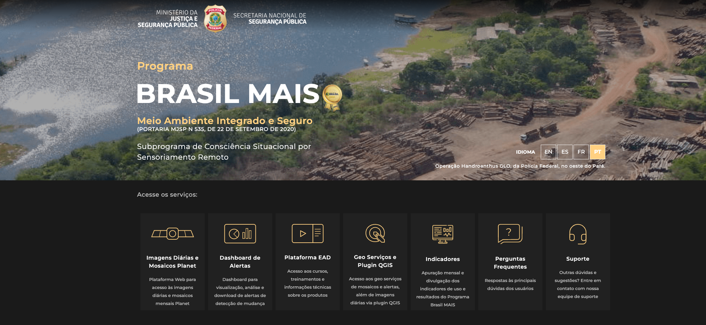

Adesão à Rede do Programa Brasil MAIS
INTELIGÊNCIA

Objeto
Acesso a plataforma de imagens geoespaciais de todo o Brasil, com imagens diárias e alertas de alterações.
Prazo
60 meses, prorrogável no interesse mútuo dos partícipes.
Recursos
Não envolve transferência de recursos financeiros entre os órgãos cooperados.
Processo SEI
50300.014095/2021-75
Serviços do portal RedeMAIS
Trilha Técnica da Fiscalização · SFC / GPF — ANTAQ
42 / 61